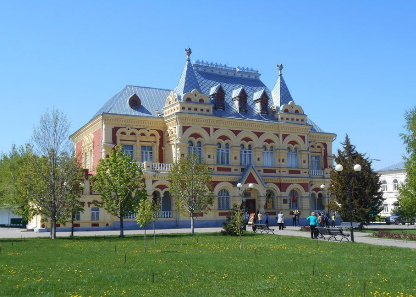

Здание бывшей земской управы/историко-краеведческий музей
На Советской улице стоит очень красивое и колоритное здание. Внешне оно чем-то напоминает терем. Это памятник архитектуры федерального значения, возведение которого относится к 1901 году. Объекту был признан «Жемчужиной Волгоградской области», победив в одноименном конкурсе. Архитектурный облик здания относят к стилистике русского барокко. Когда-то здесь была земская управа, а в наши дни исторически значимый объект стал основным корпусом главного городского музея краеведческой направленности. Краеведческий музей города Камышин ведет свою историю с 1961 года. В 14 залах освящаются темы истории, археологии, этнографии и природы населенного пункта и его окрестностей. Осматривая экспонаты, посетители совершат удивительное историческое путешествие, которое начнется с далекого прошлого, с археологических находок, свидетельствующих о древних стоянках на этой территории. Часть экспозиций посвящено становлению города, связанного с эпохой царя Алексея Михайловича, подписавшего указ о его основании, промышленному и культурному развитию города, революции 1917 года, гражданской войне и, конечно же, Великой Отечественной. Доблести и подвигам участников различных войн посвящен зал воинской славы. Всего фонды музея насчитывают около 50 тыс. экспонатов.